건축기사 (2003-05-25 기출문제)
1과목: 건축계획
1. 사무실 건축의 실단위 계획에 있어서 개방식 배치(Open Plan)에 관한 기술중 옳지 않은 것은?
- 공사비가 개실시스템보다 저렴하다.
- 방의 길이나 깊이에 변화를 줄 수 있다.
- 전면적을 유효하게 이용할 수 있어 공간 절약상 유리하다.
- 비교적 소규모 사무실 임대에 유리한 형식이다.
(정답률: 63%)

2. 미술관 계획에 있어 회화의 명시조건중 최량시각(最良視覺)은?
- 27° ~ 30°
- 42° ~ 45°
- 47° ~ 50°
- 57° ~ 60°
(정답률: 48%)
3. 종합병원의 건축계획에 관한 기술 중 가장 부적당한 것은?
- 병동부의 1간호단위는 보통 30∼40 bed 정도이다.
- 수술부문은 타부분의 통과교통이 없는 곳에 위치시키도록 한다.
- 병동배치방식 중 분관식(pavilion type)은 동선이 짧게 되는 이점이 있다.
- 일반적으로 병원건축의 모든 시설규모는 입원환자의 병상수에 의해 결정된다.
(정답률: 75%)
4. 병원의 평면계획에 있어 구급동선은 어디에 연결되어야 하는가?
- 병동부
- 외래부
- 중앙진료부
- 서비스부
(정답률: 43%)
5. 다음의 주택건축면적의 기준에 관한 설명중 가장 부적절한 것은?
- 숑바르 드 로브는 1인당 14m2 이상을 개인적 혹은 가족적인 융통성이 보장되는 기준으로 보았다.
- 숑바르 드 로브의 병리기준은 1인당 10m2 이하일 때 거주자의 심리적 건강에 나쁜 영향을 끼친다는 것이다.
- 세계가족단체협회는 적어도 1인당 평균 16m2 를 권장 하고 있다.
- 노엘은 주택의 거주성 및 평면의 분석연구를 통해 1인당 평균 주택면적을 산출하였다.
(정답률: 61%)
6. 목조 건축물로서 우리나라에서 가장 오래된 것은?
- 부석사 무량수전
- 봉정사 극락전
- 법주사 팔상전
- 화엄사 보광대전
(정답률: 68%)
7. 고딕건축에 관한 기술 중 적합치 않은 것은?
- 횡축력에 대한 플라잉 버트레스(Flying Buttress)의 창안
- 신에 대한 희생, 봉사의 종교적 상징으로서 첨탑
- 대형 석재의 일체식 구조법
- 첨두아치의 발달
(정답률: 43%)
8. 공동주택단지의 주거밀도를 계획하는데 가장 기본이 되는 사항은?
- 지반의 경사도와 토지이용율
- 건축의 구조와 주택형식
- 호수밀도와 인구밀도
- 주택의 규모와 건폐율
(정답률: 41%)
9. 우리나라 전통의 한식주택에서 문꼴부분의 면적이 큰 이유로 가장 적합한 것은?
- 출입하는데 편리하게 하기 위해서
- 하기의 고온다습을 견디기 위해서
- 동기에 일조효과를 충분히 얻기 위해서
- 겨울의 방한을 위해서
(정답률: 70%)
10. 주택의 평면계획시 공간의 조닝 방법으로 가장 적합하지 않은 것은?
- 가족 전체와 개인에 의한 조닝
- 정적공간과 동적공간에 의한 조닝
- 융통성에 의한 조닝
- 주간과 야간의 사용시간에 의한 조닝
(정답률: 66%)
11. 셀프서비스(self service)가 주가 되는 형식의 음식점은 어느 것인가?
- 슈퍼스토어(superstore)
- 카페테리아(cafeteria)
- 그릴(grill)
- 레스토랑(restaurant)
(정답률: 37%)
12. 고층 사무소 건축에 관한 기술중 적합하지 않은 것은?
- 층고를 낮게 할 경우, 건축비를 절감시킬 수 있다.
- 외장재는 경량재가 좋다.
- 고층화할 경우, 토지이용율이 높아진다.
- 승강기는 이용하기 편하도록 여러곳에 분산하는 것이 좋다.
(정답률: 78%)
13. 극장 건축의 음향계획 수립상 옳지 않은 항목은?
- 무대에 가까운 벽은 반사체로 하고 멀어짐에 따라서 흡음재의 벽을 배치하는 것이 원칙이다.
- 음향계획에 있어서 발코니의 계획은 될 수 있는 한피하는 것이 좋다.
- 오디토리움 양쪽의 벽은 무대의 음을 반사에 의해 객석 뒷부분까지 이르도록 보강해 주는 역할을 한다.
- 음의 반복 반사 현상을 피하기 위해 가급적 원형에 가까운 평면형으로 계획한다.
(정답률: 53%)
14. 다음은 도서관 건축계획의 주요한 사항들이다. 다른 종류의 건축계획과 비교하여 상대적으로 그 중요도가 가장 큰 내용은?
- 관내시설과 인근의 유사시설과의 상호관계 검토
- 시설물의 운영 목적, 내용, 방법의 구체적 분석
- 도서관의 내용의 성장에 따른 증축 고려
- 건설기금과 경상비에 대한 검토
(정답률: 56%)
15. 극장 건축계획에서 연기자의 표정을 읽을 수 있는 가시한 계를 초과하여, 잘 보여야 되는 동시에 많은 관객을 수용할 수 있는 1차 허용한도는?
- 10m
- 15m
- 22m
- 35m
(정답률: 68%)
16. 어느 학교의 1주간의 평균수업시간이 40시간인데 제도교실이 사용되는 시간은 20시간이다. 그 중 4시간을 다른 과목을 위해 사용된다. 제도교실의 이용율과 순수율은 각각 얼마인가?
- 이용율 50%, 순수율 20%
- 이용율 50%, 순수율 80%
- 이용율 20%, 순수율 50%
- 이용율 80%, 순수율 50%
(정답률: 71%)
17. 시티 호텔(city hotel)의 종류가 아닌 것은?
- 커머셜 호텔(commercial hotel)
- 터미널 호텔(terminal hotel)
- 클럽 하우스(club house)
- 아파트먼트 호텔(apartment hotel)
(정답률: 71%)
18. 은행건축에 관한 설명 중 가장 부적당한 것은?
- 일반적으로 주출입구는 도난방지상 안여닫이로 한다.
- 영업장의 넓이는 은행건축의 규모를 결정한다.
- 영업대의 높이는 고객대기실에서 100∼110cm가 적당하다.
- 어린이의 출입이 많은 곳에는 회전문을 설치하는 것이 좋다.
(정답률: 72%)
19. 학교배치형별 특징을 설명한 것 중 틀린 것은?
- 폐쇄형은 일조, 통풍 등 환경조건이 불균등하다.
- 분산병렬형은 넓은 부지를 필요로 한다.
- 집합형은 물리적 환경이 나쁘다.
- 분산병렬형은 구조계획이 간단하고 규격형의 이용도 편리하다.
(정답률: 54%)
20. 아파트의 형식에 대한 기술 중 옳지 않은 것은?
- 홀형은 계단 또는 엘레베이터 홀에서 각세대로 직접 들어가는 형식으로 프라이버시가 양호하다.
- 트리플렉스형은 하나의 주거단위가 3층으로 구성된 것으로 통로가 없는 층의 평면은 채광 및 통풍에 문제가 있다.
- 스킵플로어 형식은 주거단위의 단면을 단층형과 복층형에서 동일층으로 하지 않고 반층씩 엇나게 하는 형식을 말한다.
- 집중형은 부지의 이용률은 높으나 통풍 및 채광에는 불리하다.
(정답률: 60%)
2과목: 건축시공
21. 다음은 어떤 도장 결함의 원인을 설명한 것인가?
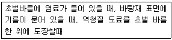
- 번짐(브리트)
- 색 분리
- 주름
- 리프팅
(정답률: 57%)
22. 칠공사에 사용되는 칠의 종류와 희석제의 관계가 잘못 연결된 것은?
- 송진건류품 - 테레빈유
- 석유건류품 - 휘발유,석유
- 콜타르 증류품 - 미네랄스피리트
- 송근건류품 - 송근유
(정답률: 64%)
23. 고력볼트접합에 관한 기술 중 옳은 것은?
- 일군(一群)의 볼트를 조일 때는 주변부에서 중앙부로 향해서 조인다.
- 볼트 두부를 조이는 경우는 너트를 조이는 경우 보다도 토크(torque)를 크게 해야만 한다.
- 마찰접합으로 마찰력이 생기는 접면(接面)은 미리 기름 등을 발라 녹이 발생하지 않도록 한다.
- 예비조임은 표준볼트장력의 30%로 한다.
(정답률: 26%)
24. 시멘트의 품질시험에 관한 설명 중 틀린 것은?
- 혼합시멘트에서 혼합재의 혼입량이 많아질수록 비중이 작아진다.
- 비표면적이 큰 시멘트일수록 분말이 미세하며 일반적으로 강도발현이 빨라지고 수화열의 발생량도 많아진다.
- 수화열은 시멘트의 화학조성과 비표면적에 좌우된다.
- 풍화한 시멘트는 수화열이 커진다.
(정답률: 43%)
25. 높이 약 1.0 ~ 1.2m 정도로 콘크리트가 완료가 될 때까지 폼을 해체하지 않고 콘크리트를 부어가면서 콘크리트의 경화상태에 따라 거푸집을 요크(york)나 기타장비로 끌어 올리면서 콘크리트 치기를 중단없이 연속적으로 시공하는 거푸집 시스템은?
- Euro Form
- Tunnel Form
- Sliding Form
- Table Form
(정답률: 59%)
26. 커튼월에 대한 일반적인 검사항목이 아닌 것은?
- 내풍압강도
- 층간변위에 대한 추종성
- 기밀성
- 인장강도
(정답률: 52%)
27. 페인트칠의 경우 초벌과 재벌 등은 도장할 때마다 그 색을 약간씩 다르게 하는 가장 큰 이유는?
- 희망하는 색을 얻기 위하여
- 색이 진하게 되는 것을 방지하기 위해서
- 착색안료를 낭비하지 않고 경제적으로 하기 위하여
- 다음 칠을 하였는지 안하였는지 구별하기 위하여
(정답률: 66%)
28. 조적벽에 발생하는 백화(Efflorescence)를 방지하기 위한 방법으로 효과가 없는 것은?
- 줄눈 모르타르에 방수제를 넣는다.
- 줄눈 모르타르에 석회를 사용한다.
- 처마를 충분히 내고 벽에 직접 비가 맞지 않도록 한다.
- 벽면에 실리콘방수를 한다.
(정답률: 74%)
29. 건축 공사 감리자의 승인에 의하여 공사 기성금액의 90% 한도내에서 지불하는 공사비 지급금의 명칭은?
- 착공금
- 중간불
- 준공불
- 하자보증금
(정답률: 32%)
30. 최근 국내에서 생산되는 쇄석 골재를 사용한 콘크리트의 일부에서도 알카리 골재반응이 일어날 수 있다는 내용의 연구보고가 발표되기 시작하였다. 다음 중 알카리 골재반응의 대책이라 할 수 없는 것은?
- 반응성 골재를 사용하지 않는다.
- 콘크리트 중의 알카리량을 감소시킨다.
- 포졸란 반응을 일으킬 수 있는 혼화재를 사용한다.
- 반응시 발생되는 균열을 방지하기 위해 균열방지 구조 철근을 사용한다.
(정답률: 33%)
31. 건축물의 터파기 공사시에 실시하는 계측의 항목과 계측기를 연결한 것이다. 틀린 것은?
- 지하수의 수압 - 수위계
- 흙막이벽의 측압, 수동토압 - 토압계
- 흙막이벽의 중간부 변형 - 경사계
- 흙막이벽의 응력 - 변형계
(정답률: 40%)
32. 보의 거푸집은 중앙에서 간사이(span)의 얼마 정도로 추켜 올리는 것이 옳은가?
- 1/300∼1/500
- 1/150∼1/200
- 1/100∼1/150
- 1/50∼1/100
(정답률: 27%)
33. 도장공사에서 철제계단(양면칠) 면적산정 방법으로 가장 옳은 것은?
- 경사면적 × 1배
- 경사면적 × 1.5배
- 경사면적 × (2.0∼2.5배)
- 경사면적 × (3∼5배)
(정답률: 36%)
34. 문윗틀과 문짝에 설치하여 문이 자동적으로 닫혀지게 하는 장치로서 도어 클로우저(door closer)라고 명명되는 것은?
- 도어 첵크(door check)
- 함자물쇠
- 체인록
- 피봇 힌지(pivot hinge)
(정답률: 65%)
35. 지하연속벽(slurry wall)에 관한 설명으로 옳지 않은 것은?
- 차수성이 우수하다.
- 비교적 지반조건에 좌우되지 않는다.
- 소음· 진동이 적고, 벽체의 강성이 높다.
- 공사비가 타공법에 비하여 저렴하고 공기가 단축된다.
(정답률: 68%)
36. 공사금액의 결정방법에 따른 도급방식이 아닌 것은?
- 정액도급
- 공종별도급
- 단가도급
- 실비청산 보수가산도급
(정답률: 53%)
37. 토질조사에 있어 중요한 것으로 지중 토질의 분포, 토층의 구성 등을 알 수 있고 주상도를 그릴 수 있는 정보를 제공할 수 있는 방법은 무엇인가?
- 터파보기
- 물리적 지하 탐사법
- 베인 테스트
- 보링
(정답률: 40%)
38. 건축 공사비 구성요소의 하나인 재료비의 내용이 아닌것은?
- 직접재료비
- 간접재료비
- 운임, 보관비 등의 부대비용
- 일반관리비
(정답률: 49%)
39. 흙막이 공사시 지표재하 하중의 중량에 못견디어 흙막이 저면 흙이 붕괴되어 바깥에 있는 흙이 안으로 밀려 볼록하게 되어 파괴되는 현상을 무엇이라 하는가?
- 하이빙(heaving)파괴
- 보일링(boiling)파괴
- 수동토압(passive earth pressure)파괴
- 전단(shearing)파괴
(정답률: 46%)
40. 파이프 구조 공사의 특징으로 옳지 않은 것은?
- 경량이며 외관이 경쾌 미려하다.
- 부재형상이 복잡하여 도장면적도 많다.
- 접합부의 절단 가공이 어렵다.
- 접합부 부품이 복잡하여지는 난점이 있다.
(정답률: 30%)
3과목: 건축구조
41. 압축재의 길이가 3.5m이고 양단이 힌지인 경우의 좌굴길이는?
- 1.75m
- 2.45m
- 2.8m
- 3.5m
(정답률: 49%)
42. 플래트 슬래브(flat slab)에 관한 기술중 적당하지 않은 것은?
- 바닥판은 각 방향으로 주열대(column strip)와 주간대(middle strip)로 나누어 하중을 직접 기둥에 전달하는 평판식 구조를 말한다.
- 작은 내부보에 의하여 지지되는 가장 일반적인 슬래브구조를 말한다.
- 바닥판은 그 두께를 15cm 이상으로 하고, 주두부(capital)에 받침판을 설치하는 것이 일반적이지만 생략하기도 한다.
- 미국인 모로우(D.W.Morrow)의 고안으로 기둥배치를 정삼각형으로 배치하고 3방향에 철근을 배근한 3방향식도 있다.
(정답률: 33%)
43. 강도설계법에서 철근콘크리트 보에 고정하중모멘트 15tonf· m, 활하중모멘트 20 tonf· m가 작용할 때, 부재설계용 극한모멘트는 어느 것인가?
- 22 tonf· m
- 33 tonf· m
- 44 tonf· m
- 55 tonf· m
(정답률: 28%)
44. 단면적 A와 단면계수 Z가 다음과 같은 4개의 I형강이 있다. 휨모멘트에 대한 효율이 가장 좋은 것은?
- A = 39cm2 , Z = 254 cm3
- A = 27cm2 , Z = 370 cm3
- A = 40cm2 , Z = 321 cm3
- A = 35cm2 , Z = 390 cm3
(정답률: 36%)
45. 그림과 같은 접합부에서 1개의 리벳이 담당할 수 있는 허용 내력은 ?(단, 리벳의 허용 전단응력도 fs=1.2tonf/cm2, 강재의 허용 인장응력도 ft=1.6tonf/cm2, 허용 지압응력도 fℓ =3.0tonf/cm2이다.)
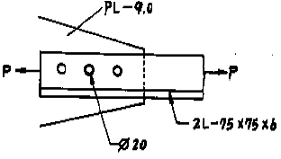
- 5.4 tonf
- 5.8 tonf
- 6.2 tonf
- 7.5 tonf
(정답률: 22%)
46. 워플 슬래브에 관한 기술 중 틀린 것은?
- 하중은 2방향으로 전달된다.
- 규격화된 덱크플레이트를 사용함으로써 효율적인 시 공을 할 수 있다.
- 층고를 줄일 수 있으며 골조미를 제공한다.
- 전단력이 큰 주두부분은 일반적으로 보강하여야 한다
(정답률: 13%)
47. 강도 설계법에서 아래와 같은 조건을 가진 단근 직사각형보의 설계강도(øMn)로 가장 적당한 것은 ? (단, b=35cm, D=60cm, 4-D22(15.48cm2),fck(fc')=210kgf/cm2, fy=4000kgf/cm2, 철근피복두께는 5cm이며, 철근비는 최소 및 최대철근비의 범위내에 있음)
- 25.4 tf· m
- 27.3 tf· m
- 28.4 tf· m
- 30.8 tf· m
(정답률: 25%)
48. 그림과 같은 단근 장방형보가 평형변형률 상태에 있다. 강도설계법에 의거할 때 인장철근량으로 가장 적당한 것은?(단, fck=210㎏f/㎝2 , fy=4000㎏f/㎝2 , a=16.8㎝)
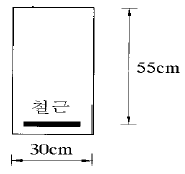
- 20㎝2
- 23㎝2
- 28㎝2
- 30㎝2
(정답률: 35%)
49. 그림과 같은 콘크리트 원통에 30tf이 작용하여 Δℓ=0.016㎝ 줄어들었고, Δd=0.001㎝가 늘어났을 때 탄성계수 E와 프와송비는?
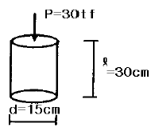
- 3.18x105 kgf/㎝2, 1/4
- 3.18x105 kgf/㎝2, 1/8
- 3.76x105 kgf/㎝2, 1/4
- 3.76x105 kgf/㎝2, 1/8
(정답률: 42%)
50. 벽돌쌓기 방법에서 쌓기법에 관한 설명으로 올바르지 않은 것은?
- 불식쌓기는 길이쌓기와 마구리쌓기를 번갈아 하고 모서리 부근에 이오토막을 사용한다.
- 화란식쌓기는 한켜에 길이 다음켜에 마구리로 쌓고 모서리 부근에 칠오토막을 사용한다.
- 영롱쌓기는 벽돌벽 등에 장식적으로 구멍을 내어 쌓는 것이다.
- 미식쌓기는 전면은 치장벽돌로 전체를 길이쌓기하고 뒷면은 마구리쌓기로 한다.
(정답률: 33%)
51. 철근 콘크리트에 있어서 철근의 피복 두께에 관한 기술중 맞는 것은?
- 철근의 피복두께는 주근표면과 이것을 덮고 있는 콘크리트 표면까지의 최단거리이다.
- 피복두께는 내화, 내구를 고려하여 결정한 것이다.
- 흙에 직접 접하는 보와 기초의 피복두께는 4cm 이상이다.
- 이형철근을 사용하는 경우 피복두께는 1cm 감할 수 있다.
(정답률: 39%)
52. 목구조의 보강철물에 관해 잘못 설명하고 있는 것은?
- 왕대공과 평보의 맞춤부에는 반드시 띠쇠로 보강한다
- 처마도리와 깔도리는 볼트로 긴결한다.
- 토대는 기초에 앵커볼트로서 고정한다.
- ㅅ자보와 빗대공의 맞춤부의 보강철물로 꺾쇠가 있다
(정답률: 22%)
53. 철근콘크리트 기둥의 띠철근의 사용목적으로 옳지 않은 것은?
- 주근의 설계 위치를 유지한다.
- 크리이프 양을 줄이는데 효과가 있다.
- 주근의 좌굴을 방지하는데 효력이 있다.
- 수평력에 대한 전단보강의 작용을 한다.
(정답률: 37%)
54. 익스팬션조인트(expansion joint)의 설치원인과 목적에 관한 기술 중에서 적당하지 않은 것은?
- 콘크리트를 이어치기할 때 구조적인 일체성 확보를 목적으로 한다.
- 콘크리트의 팽창, 수축에 대한 유해한 균열 방지를 목적으로 한다.
- 건축물을 평면적으로 증축하고자 할 때 설치한다.
- 기초의 부동침하에 대비하여 이를 예방하고, 변위흡수를 목적으로 한다.
(정답률: 35%)
55. 균질 재료로 된 부재 단면적이 10cm2이고 부재길이가 2.1m이며 재축방향으로 10tonf의 인장력을 작용하였을 때 길이 1mm가 늘어났다. 다음 중 어느 재료의 길이 방향 탄성계수라고 판단되는가?
- 철재
- 목재
- 콘크리트
- 적벽돌
(정답률: 47%)
56. 콘크리트 변형에 영향을 미치는 요인이 아닌 것은?
- 크리이프
- 수축
- 탄성
- 압밀
(정답률: 35%)
57. 철근 콘크리트 단순보에 관한 다음 사항중에서 옳지 않은 것은?
- 인장철근을 증가시키는 것은 전단력에 대한 유효한 보강법이다.
- 일반적으로 전단 응력은 단면의 중립축에서 최대이나 항상 중립축에서 최대는 아니다.
- 보의 주근은 중앙부에서는 하부에 많이 넣는다.
- 중요한 보는 복근보로 한다.
(정답률: 19%)
58. 휨모멘트와 압축력을 동시에 받는 기둥에서, 단면에 생기는 응력의 분포도가 옳지 않은 것은?
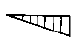
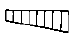
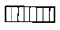
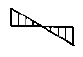
(정답률: 37%)
59. 그림에서 X축에 대한 단면 1차 모멘트(Gx) 값은?
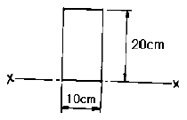
- 200cm3
- 1000cm3
- 1500cm3
- 2000cm3
(정답률: 39%)
60. 그림과 같은 H형강 보를 만들고자 할때 웨브와 플랜지의 접합에 사용되는 모살용접의 치수(s)는 얼마로 함이 타당한가 ? (단, Ix = 47800cm4, V=30tf, 사용강재 SS 400)
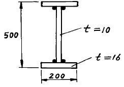
- 4mm
- 5mm
- 6mm
- 7mm
(정답률: 35%)
4과목: 건축설비
61. 고속 엘리베이터의 구동방식으로 가장 적당한 것은?
- 교류 1단
- 교류 2단
- 직류기어드
- 직류기어레스
(정답률: 67%)
62. 최대수용전력과 부하설비용량의 비를 %로 나타낸 것을 무엇이라고 하는가?
- 수요율
- 전류율
- 부하율
- 부등율
(정답률: 26%)
63. 이동보도에 대한 설명중 잘못된 것은?
- 이동속도는 30-50m/분이다.
- 승객을 수직으로 수송하는 방식이다.
- 수평으로부터 10° 이내의 경사로 되어 있다.
- 주로 역이나 공항 등에 이용된다.
(정답률: 59%)
64. 전선의 굵기를 결정하는 요소와 관계가 없는 것은?
- 기계적강도
- 전선의 허용전류
- 전압강하
- 전선외곽의 보호관 굵기
(정답률: 52%)
65. 냉방시의 송풍량을 구하는 식 가운데서 옳은 것은? (단,qs, qL : 실내현열 및 잠열부하(kcal/h) Q : 송풍량(m3/h) ti, td : 실내공기온도, 송풍공기온도(℃))
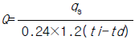
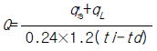
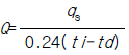
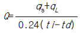
(정답률: 29%)
66. 위생기구와 그와 관계있는 것들이다. 틀린 것은?
- 세면기 - Pop-up
- 대변기 - Siphon jet
- 소변기 - Flush valve
- 욕조 - Grease trap
(정답률: 24%)
67. 오수의 생물화학적 처리법 중 활성 슬러지 공법의 변법이 아닌 것은?
- 점감식포기법
- 장기포기법
- 살수여상법
- 계단식포기법
(정답률: 39%)
68. 한시간의 급탕량이 5m3일 때 급탕부하는? (단, 급탕온도 70℃, 급수온도 10℃)
- 30 Mcal/h
- 35 Mcal/h
- 300 Mcal/h
- 3,000 Mcal/h
(정답률: 36%)
69. 피뢰침에 대한 설명 중 틀린 것은?
- 일반 건축물의 피뢰침 보호각은 60° 이하이다.
- 피뢰도선의 굵기는 동선의 경우 단면적 20㎜2 이상으로 한다.
- 돌침과 지지철물은 완전히 부착시킨다.
- 접지전극은 한 면의 면적이 0.35m2 이상인 동판을 사용한다.
(정답률: 20%)
70. 인공광원의 효율에 대한 설명으로 적합한 것은?
- 광속을 광원의 용량(전력)으로 나눈 값이다.
- 백열등의 광속을 100으로 본 각 광원의 광속비를 말한다.
- 전광속에 대한 하향광속의 비를 말한다.
- 인공 광원의 유효수명을 말한다.
(정답률: 46%)
71. 다음 급수용 물탱크에 관한 설명으로 옳지 않은 것은?
- 물탱크는 단수하지 않고 청소가 가능하도록 2개이상으로 분할하여 설치하거나 내부칸막이를 설치한다.
- 넘침관(overflow pipe)은 간접 배수로 한다
- 보수 점검을 위하여 30cm 폭의 맨홀을 설치한다
- 청소 및 배수를 위하여 최하단부에 배수 밸브를 설치한다.
(정답률: 30%)
72. 온풍로(Hot Air Furnace)에 관한 기술로 옳은 것은?
- 난방용 보일러에 비하여 열효율은 약간 낮으나 운전 비가 많이 든다.
- 장치의 열용량이 크므로 더워지는데 시간이 걸린다.
- 추운곳에서는 운전 정지 중에도 동결의 우려는 없다.
- 발생한 열을 급탕, 기타의 용도로도 이용한다.
(정답률: 39%)
73. 실의 크기가 6m x 10m, 천정고가 2.5m인 사무실의 실내 온도를 20℃로 유지하고자 한다. 외기온도가 -5℃이고 시간당 1회의 외기가 침입한다고 할 경우 외기에 의한 손실 열량은 몇 kcal/h 인가? (단, 공기의 정압비열은 0.24kcal/kg℃, 비중량은 1.2kg/m3로 한다.)
- 450
- 650
- 1,080
- 4,500
(정답률: 32%)
74. 수도본관으로부터 수직높이 13m에 설치되어 있는 대변기(F.V)에 급수하고자 할 때, 수도 본관의 필요압력은 최소얼마 이상인가 ? (단, 배관 내의 전마찰 손실압력은 1kg/cm2로 한다)
- 1 kg/cm2
- 2 kg/cm2
- 3 kg/cm2
- 4 kg/cm2
(정답률: 38%)
75. 공기조화 방식중 물방식(전수방식)에 속하는 것은?
- 단일 덕트 방식
- 2중 덕트 방식
- 멀티죤 유니트 방식
- 팬 코일 유니트 방식
(정답률: 61%)
76. 간선설계 순서로서 옳은 것은?
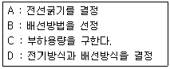
- A - B - C - D
- C - D - B - A
- B - A - D - C
- D - B - A - C
(정답률: 49%)
77. 대변기 세정(洗淨)급수방식이 아닌 것은?
- 감압밸브방식
- 로우탱크방식
- 세정밸브방식
- 하이탱크방식
(정답률: 47%)
78. 온열 감각에 영향을 미치는 4가지 요소로서 맞는 것은?
- 기온, 습도, 기류, 복사열
- 기온, 습도, 조명, 기압
- 기온, 소음, 열전도, 복사열
- 열관류, 열전도, 복사열, 기온
(정답률: 71%)
79. 다음중 실내를 부압으로 유지하며 실내의 냄새나 유해물질을 다른 실로 흘려 보내지 않으므로 주방, 화장실, 유해가스 발생장소 등에 사용되는 환기방식은?
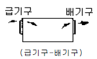
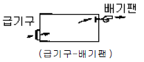
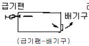
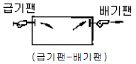
(정답률: 70%)
80. 전기설비의 전압 구분에서 고압에 해당하는 것은?
- 교류 300V이하, 직류 600V이하
- 교류 600V이하, 직류 300V이하
- 교류 600V∼7,000V, 직류 750V∼7,000V
- 교류 750V∼7,000V, 직류 600V∼7,000V
(정답률: 56%)
5과목: 건축법규
81. 시가화조정구역의 지정에 관한 설명으로 옳지 않은 것은?
- 시가화조정구역의 지정에 관한 도시관리계획의 결정은 시가화유보기간이 만료된날의 15일후부터 그 효력을 상실한다.
- 시가화 유보기간은 5년 이상 20년 이내의 범위안에서 결정한다.
- 도시지역과 그 주변지역의 무질서한 시가화를 방지하고 도시의 계획적· 단계적인 개발을 도모하기 위하여 지정한다.
- 건설교통부장관은 시가화조정구역의 지정을 도시관리계획으로 결정할 수 있다.
(정답률: 45%)
82. 연면적의 합계가 5,000m2이상인 건축물의 용도로서 공개공지를 확보하지 않아도 되는 것은?
- 위락시설
- 업무시설
- 숙박시설
- 문화 및 집회시설
(정답률: 38%)
83. 생산관리지역에서의 용적률로 옳은 것은?
- 150퍼센트 이상 300퍼센트 이하
- 100퍼센트 이상 200퍼센트 이하
- 80퍼센트 이상 100퍼센트 이하
- 50퍼센트 이상 80퍼센트 이하
(정답률: 16%)
84. 자동차용 승강기로 운반된 자동차가 주차구획까지 자주식으로 들어가는 노외주차장에 주차대수 200대를 설치 한다면 자동차용 승강기는 몇 대를 설치하여야 하는가?
- 10대
- 9대
- 8대
- 7대
(정답률: 30%)
85. 비상용승강기의 승강장의 구조기준으로 옳지 않은 것은?
- 승강장은 각층의 내부와 연결될 수 있도록 할 것
- 승강장은 벽 및 반자가 실내에 접하는 부분의 마감재료는 내연재료로 할 것
- 승강장의 바닥면적은 비상용승강기 1대에 대하여 6제곱미터 이상으로 할 것
- 피난층이 있는 승강장의 출입구로 부터 도로 또는 공지에 이르는 거리가 30미터 이하일 것
(정답률: 50%)
86. 내화구조에 관한 기준 중 부적합한 것은?
- 기둥의 경우 그 작은 지름이 20㎝ 이상인 것으로서 철근콘크리트조
- 벽의 경우 벽돌조로서 두께가 19㎝ 이상인 것
- 바닥의 경우 철재의 양면을 두께 5㎝ 이상의 철망 모르타르 또는 콘크리트로 덮은 것
- 계단의 경우 무근콘크리트조· 콘크리트블록조· 벽돌조 또는 석조
(정답률: 21%)
87. 배관설비로서 배수용으로 쓰이는 배관설비의 기준으로 옳지 않은 것은?
- 배출시키는 빗물 또는 오수의 양 및 수질에 따라 그에 적당한 용량 및 경사를 지게 하거나 그에 적합한 재질을 사용할 것
- 우수관과 오수관은 분리하여 배관할 것
- 배관설비의 오수에 접하는 부분은 방수재료를 사용할 것
- 지하실 등 공공하수도로 자연배수를 할 수 없는 곳에는 배수용량에 맞는 강제배수시설을 설치할 것
(정답률: 42%)
88. 관람석 또는 집회실로서 그 바닥면적이 200m2이상인 것의 거실의 반자높이를 4m이상 설치하여야 하는 용도가 아닌것은?
- 공연장
- 의료시설중 장례식장
- 공항시설
- 위락시설중 주점영업
(정답률: 43%)
89. 도시교통정비촉진법 규정에 의한 교통영향평가를 받지 아니할 경우 20,000m2의 단지조성사업에 설치하여야 할 노외주차장의 최소 규모는?
- 60m2
- 120m2
- 160m2
- 220m2
(정답률: 26%)
90. 건축물의 바닥면적에 대한 설명 중 옳지 않은 것은?
- 벽· 기둥의 구획이 없는 건축물에 있어서는 그 지붕 끝부분으로부터 수평거리 1.5m를 후퇴한 선으로 둘러싸인 수평투영면적으로 한다.
- 공동주택으로서 지상층에 설치한 어린이놀이터의 경우 당해 부분의 면적은 바닥면적에 산입하지 아니한다.
- 피로티는 당해 부분이 공중의 통행· 주차에 전용되는 경우에는 바닥면적에 산입하지 아니한다.
- 층고가 1.5m미터인 계단탑은 바닥면적에 산입하지 아니한다.
(정답률: 54%)
91. 층수산정에 관한 내용 중 옳지 않은 것은?
- 지하층은 건축물의 층수에 산입하지 아니한다.
- 층의 구분이 명확하지 아니한 건축물은 당해 건축물의 높이 4m마다 하나의 층으로 산정한다.
- 건축물의 부분에 따라 그 층수를 달리하는 경우에는 각 부분에 따라 평균한 층의 수를 층수로 한다.
- 계단탑, 장식탑으로서 그 수평투영면적의 합계가 당해 건축물의 건축면적의 8분의1 이하인 것은 건축물의 층수에 산입하지 아니한다.
(정답률: 41%)
92. 건축폐자재를 건축물의 신축공사를 위한 골조공사에 얼마 이상을 사용하여야 건축법의 일부를 완화하여 적용할 수 있는가?
- 10%
- 15%
- 20%
- 25%
(정답률: 21%)
93. 환경보전을 위한 필요 조치사항으로 굴착부분의 비탈면 높이가 3m를 넘는 높이의 비탈면에는 높이 3m이내마다 단을 만들어 주어야 한다. 이 때 단의 넓이 기준으로 옳은 것은?
- 비탈면적의 1/3이상
- 비탈면적의 1/4이상
- 비탈면적의 1/5이상
- 비탈면적의 1/6이상
(정답률: 18%)
94. 총주차대수 규모가 8대 이하인 경우 부설주차장의 구조 및 설비기준을 완화할 수 있는 주차장의 형태는?
- 자주식 주차장 지평식
- 자주식 주차장 건축물식
- 기계식 주차장 지하식
- 기계식 주차장 공작물식
(정답률: 41%)
95. 국토의 계획 및 이용에 관한 법률상 용도지구에 포함되지 않는 것은?
- 특정용도제한지구
- 보존지구
- 취락지구
- 시설용지지구
(정답률: 22%)
96. 지하층의 구조 및 설비에 대한 기준으로 옳지 않은 것은?
- 바닥면적이 50제곱미터 이상인 층에는 직통계단 외에 피난층 또는 지상으로 통하는 비상탈출구 및 환기통을 설치할 것
- 바닥면적이 1천제곱미터 이상인 층에는 피난층 또는 지상으로 통하는 직통계단을 방화구획으로 구획되는 각 부분마다 1개소 이상 설치할 것
- 거실의 바닥면적의 합계가 5백제곱미터 이상인 층에는 환기설비를 설치할 것
- 지하층의 바닥면적이 300제곱미터 이상인 층에는 식수공급을 위한 급수전을 1개소 이상 설치할 것
(정답률: 35%)
97. 주차형식에 따른 다음 차로의 너비 중 출입구가 2개 이상인 경우에 틀린 것은?
- 직각주차 : 6.0m
- 60恩대향주차 : 5.0m
- 45恩대향주차 : 3.5m
- 평행주차 : 3.3m
(정답률: 29%)
98. 다음 중 대지를 분할할 때 최소한의 면적 기준으로 옳지 않은 것은?
- 주거지역 - 60m2
- 상업지역 - 150m2
- 공업지역 - 100m2
- 녹지지역 - 200m2
(정답률: 24%)
99. 주거용 건축물에서 음용수 급수관 지름의 최소 기준은? (단, 가구수는 16가구이다.)
- 50㎜
- 40㎜
- 30㎜
- 20㎜
(정답률: 50%)
100. 도로면으로부터 높이 몇 미터 이하에 있는 출입구·창문 기타 이와 유사한 구조물은 개폐시에 건축선의 수직면을 넘는 구조로 하여서는 아니되는가?
- 3.0m
- 3.5m
- 4.0m
- 4.5m
(정답률: 53%)